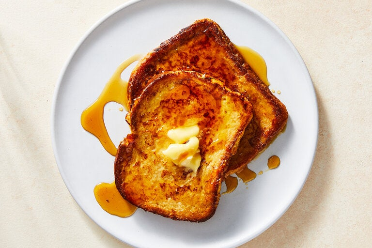

French Toast
Time: 10 minutes
Yield: 1 serving
Source: NYT Cooking

Crackling around the edges and crisp on the outsides with pudding-soft centers, these thin slices of French toast taste like bread pudding, and feel especially like dessert if you smother them with maple syrup, jam or other sweet toppings. The key is to fully soak the bread, then cook the slices gently, so the insides cook through without the outsides burning. If the bread starts to brown too quickly, turn down the heat. You can double, triple or quadruple the amounts below to make enough for friends. Serve them in batches straight from the pan, or keep warm in a 200-degree oven on a plate or baking sheet.
Ingredients
- 1 large egg
- ¼ cup milk
- Salt
- 2 slices sandwich bread
- ½ tablespoon unsalted butter, plus more for serving
- Maple syrup, jam or other toppings, for serving
Preparation
Step 1
In a bowl or shallow dish that will fit the bread, beat the egg, milk and a pinch of salt with a fork until very smooth and bubbly on top.
Step 2
Add both bread slices (it’s OK to stack them if they don’t quite fit) and soak them, turning a few times, until the mixture is fully absorbed.
Step 3
Set a large nonstick skillet over medium heat. Add the butter and swirl it around the pan until it melts. The soaked bread will be really soft, so carefully pick up each slice by sliding your whole hand under it, then setting it in the pan. Cook until the bottoms are golden brown, about 3 minutes. Flip the slices, reduce the heat to medium-low and cook until the other sides are brown, 2 to 3 minutes.
Step 4
Enjoy hot, with more butter spread over the slices and with your favorite toppings.